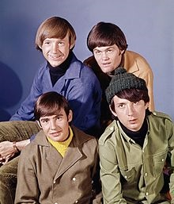

The Monkees are an American-British pop rock band originally active between 1965 and 1971, with subsequent reunion albums and tours in the decades that followed.
The band formed in 1965 in Los Angelse by Bob Rafelson and Schnider. The Monkees aried only for four years between 1966 to 1968. The four young singers were Peter Tork, Micky Dolnez, Davey Jones and Michael Nesmith, who all can be seen below. ter Tork - Peter Tork, was known as Peter Halsten Thorkelson, born on the 13 February 1942. He is an American musician and actor, best known as the keyboardist and bass guitarist of the Monkees. Davy Jones - David Thomas, was knwon as Davy Jones and was born on the 30 December 1945. For the band he was was singer-songwriter, musician, actor, but most famous for starring in the TV series of the same name. Michael Nesmith - Robert Michael Nesmith, known as Michael Nesmith. He was born 30 December 1942. He is an American musician, songwriter, actor, producer, novelist, businessman, and philanthropist, but best known as a member of the pop rock band the Monkees. Micky Dolenz - George Michael, known as Micky Dolenz was born on the 8th March 1945. He was an American actor, musician, and theater director, but best known as a vocalist and drummer of the 1960s pop/rock band the Monkees.